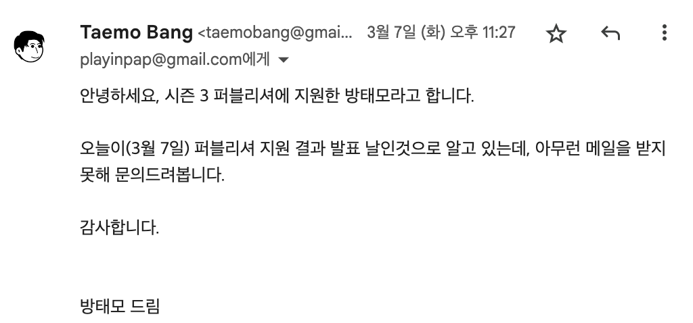
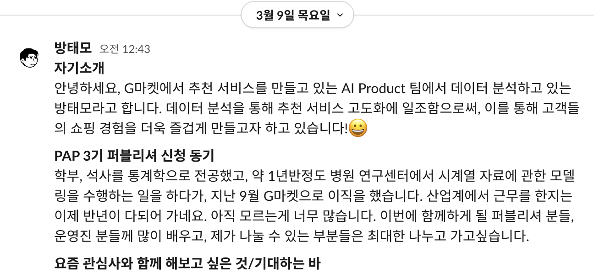

월간 회고록: 3월
사내 뉴스룸 인터뷰, PAP 퍼블리셔 3기

지난 월간 회고록들은 경어체로 작성했는데, 이제부터는 평어체로 무심한듯?.. 편하게 작성해보려고 한다. 지난 한달 간 있었던 일들을 스스로 회고해보는 글이라 그런지 평어체가 확실히 글이 잘 적어지는 듯 하다. 사실 다른 기술적인 주제의 글들도 이제는 그냥 평어체로 작성해볼까 생각 중이다. 기업의 기술 블로그나 플랫폼에 기고하는 글도 아니고, 그냥 개인적으로 운영하는 블로그라 뭔가 부담없이 빠르게 글을 쓰기에는 평어체 + (구어체, 문어체 혼용) 조합이 최고인 듯 하다. 말하는 걸 보니 이미 어느정도 결론을 지어놓은 듯 하다.😂 그럼 이제 본론으로 들어가서 지난 3월을 돌아보자.
일
사내 뉴스룸 인터뷰
3월 23일 Corporate Comms 팀으로부터 사내 뉴스룸 인터뷰 요청을 받았다. 블로그에 글을 포스팅하고 난 뒤에 링크드인에 홍보를 하곤 했는데, 거기서 내 글을 봐주시고 개인 블로그에 쓴 글들을 좋게 봐주신 듯 했다. 아직 저연차이기 때문에 다른 분들께 도움이 될만한 이야기를 할 수 있을까 싶어 인터뷰에 응해도 될지 망설여졌다. 뭐, 결론적으로는 팀원분들께 의견을 조금 여쭤보고 용기를 얻어 인터뷰에 응하기로 했지만.😂
며칠 뒤 무려 11개의 질문이 담긴 인터뷰 질문지를 받았다. 질문들을 쭉 한번 읽어보자마자 답변에 꽤 많은 시간이 걸리겠음을 직감했다. 정답이 없는 꽤 어려운 질문들도 있었고, 내 과거를 돌아봐야하는 질문들도 있었다. 답변 초고, 퇴고 후 교정까지 대략 6-7시간 정도를 쓴 듯 하다. 퇴고 및 교정에 너무 집중하다보니 의도치 않은 야근을 하게되기도 했고. 뭐 이정도는 내가 원해서 응한 인터뷰여서 의도치 않은 야근이었지만 기분 좋은?..야근이었다. 내 블로그도 아닌 회사 뉴스룸에 남는 글이 될 것이기 때문에 답변에 더더욱 신경쓸 필요가 있었고.
아무튼, 이번 뉴스룸 인터뷰는 내게 좋은 경험이었다:
왜 좋은 경험이었다고 생각하고 있는가?
뉴스룸에 들어가는 인터뷰의 특성 상 우리 업무를 잘 모르는 사람들이 대상 독자일 수 있다. 그래서, 최대한 알기 쉽게 설명하려고 노력했다. Data Analytics/Science 쪽에 사전 지식이 없는 사람들을 대상으로 우리 팀에 대해, 그리고 내가 맡은 업무에 대해 쉽게 설명하는 연습을 해볼 수 있었다.
학창 시절 데이터 분석 업무에 관한 비전, G마켓에서 입사하기 전에 했던 업무, G마켓 AI Product 팀에서 근무를 시작하게 된 계기 등과 같은 질문에 답변을 하며, 과거를 깊게 회고해볼 수 있었다. 갈림길에 선 순간들에서 왜 그런 결정을 했는지에 대해 돌아보는 것은 언제나 즐겁다. 이러한 질문들에 답변하는게 누군가는 따분한 일일 수도 있는데, 나는 왜 즐거운지에 대해 생각을 해봤다. 첫째는 고심 끝에 선택한 것들이 스택된 결과인 현재의 내 상황이 그렇게 썩.. 나쁘진 않다고 생각하고 있어서 일 것이고, 둘째는 그러한 최종 결정들에 개인적으로 납득이 가는 합당한 이유가 있었기 때문일 것이다.
나와 같은 저연차에 사내에서 이런 인터뷰 기회 갖는 경우는 많지 않다고 보는데, 거기다 내 블로그를 좋게 봐주셔서 인터뷰를 요청하셨다고 하니 더 기분이 좋았다. 인터뷰지에 받은 질문들이 어렵기도 했고 꽤 구체적이었는데, 아마 그 이유가 내 블로그에 회고 글이나 칼럼들을 쭉 훎어봐 주셔서 그런 것 같다. 사진 촬영하는 날 담당자 분과 이런저런 이야기도 나누었는데, 내 블로그에 글들이 질문지를 만드실 때 많은 도움이 되셨다고 했다. 아무래도 잘 모르는 분야에 있는 실무자에게 그 사람의 배경과 해당 분야의 사전 지식에 대한 정보가 없는 채로 여러가지 질문을 던져야하니, 주기적으로 인터뷰이(interviewee)를 선정하고 인터뷰어(interviewer)로서 좋은 질문지를 만드는 일도 정말 만만치 않은 일이라는 생각이 들었다.
결론적으로 뉴스룸에 최종적으로 올라간 질문은 9개이다. 빠진 질답은 하루 일과, 업무 루틴에 관한 것과 내 개인적 목표에 관한 부분인데, 내가 다른 질문들에 꽤 답변을 길게해서 충분히 빠질만 했던 것 같다.😅
개인
PAP 퍼블리셔 3기
지난 3월부터 PAP - Product Analytics Playground 3기 퍼블리셔로 활동하게 됐다. 지난 1월 회고록에서 밝혔듯이, 글또 8기로도 활동하고 있는데 PAP도 전부터 눈여겨 보던 커뮤니티라 퍼블리서 모집 공고가 나오자마자 지원해봐야겠다는 생각을 했다. 개인적인 에너지에 부하가 걸리진 않을까 잠깐 생각도 해봤는데, 두 커뮤니티 모두 글을 써야하는 커뮤니티이니 크게 다를 것은 없을 거라 생각했다. 같은 업계 사람들과 이야기를 나눌 기회가 있다는 것은 덤이고.
3월 7일 자정이 가까워 오는 시간에 퍼블리셔에 선정됐다는 메일을 받았는데, 또 그걸 못참고 메일을 보냈었다.😂

꼭 붙었으면 하는 마음에 많이 급했나보다..😅 퍼블리셔 선정 논의가 다소 길어지셔서 메일 안내가 늦어지셨다고 한다. 누가 돈을 주는 것도 아닌데, 업무 외에 개인적으로 시간을 내서 이런 커뮤니티를 운영한다는게.. 정말 대단한 것 같다. PAP에 대해 조금 홍보하자면, 앞서 PAP도 글 쓰는 커뮤니티라고 했는데 그렇게 단순한 목적으로 운영되고 있는 커뮤니티는 아니다. 내가 이런 말을 하는 이유는 PAP의 비전을 읽어보면 쉽게 이해된다:
데이터 드리븐 프로덕트 개발 문화와 의사결정 문화를 각자의 자리에서 이끄는 미래를 지향함
데이터 기반 의사결정과 임팩트 증대에 수반되는 도구/기술/문화/조직 구조를 이야기하는 공간
데이터 수집의 중요성, 데이터 기반 의사결정하는 것의 효용, 데이터를 바라볼 때 주의할 점들, 플랫폼을 통해 자동화할 수 있는 영역 등에 대해 직군과 관계없이 많은 사람들이 비슷한 단계에 있음
합격 메일을 받고 다음날 초대받은 PAP 슬랙에 들어가 자기소개를 한 것으로 기억한다.

자기소개 전체를 캡쳐하진 않았는데, 또 투머치토커 특성이 발동되서 주저리주저리 많이도 적었다. PAP 2기 퍼블리셔는 30분 정도였고, 3기는 더 적은 인원인 17명만 선발이 되었다. 올라온 자기소개들을 쭉 보는데 정말 대단한 분들이 많았다. 그 중에는 링크드인에서 종종 봤던 분들도 계셨고. 어떤 글을 기고해야할지.. 급 부담이 됐다. (내가 생각하기에) 대단한 분들이 퍼블리셔에 포진되어 있는 것도 그렇고, 6개월간 활동하며 2주마다 글을 써야하는 글또와 달리 PAP는 2달 간 활동하며 3개의 글을 기고해야하기 때문에 뭐랄까.. 글의 퀄리티가 굉장히 중요하겠다는 생각을 했다. 거기다 글또는 내 개인 블로그에 기고하고 링크를 제출하지만, PAP는 PAP 블로그에 다가 직접적으로 기고를 해야하기 때문에. 결코 PAP 블로그의 퀄리티에 누가 되는 글을 작성할 수 없었다.😂 사실 인과추론에 대한 글을 적고 싶었는데, 아직 PAP에 기고할 수준이 확실히 아닌 걸 알기에 익숙한 주제로 글을 써야겠다고 마음을 먹었다.😭 그렇게 첫 번째 글 주제는 시계열이되었다. 다음 글 주제는 아마 통계학과 관련한 글이 되지 않을까 싶다.
짤막한 생각
문득 어떤 계기로 하게된 짤막한 생각들 중에 정리해두고 싶은 것들은 페이스북과 링크드인에 기록을 해두는 편이다. 지난달에는 실무에서 누군가를 리드해야 하는 레벨에 올라있는 사람들이 가지고 있는 공통점을 어느정도 파악하게되어, 이 부분에 대해 정리를 해봤었다:
나도 장기적인 관점에서 누군가를 리드하고 그들의 성장을 도울 수 있는 사람이 되고 싶다는 생각이 있는데, 이미 그 레벨에 올라가 있는 사람들이 가지고 있는 능력들을 하나하나 발견하게 될 때마다 자신감이 떨어진다. 해당 레벨에 올라기기 위해 갖추어야 하는 것들을 하나씩 적어보고, 매년 하나씩만 습득한다고 해보면.. 밝은 미래가 기다리고 있을 것이라고 생각해본다.😂
맺음말
개인적인 풍파를 잠깐 겪었던 3월이지만, 특별히 회고할 것은 많지 않아서 금방 적겠지 했는데 어느덧 2시간이 지났다. 역시 글을 쓰기 시작하기 전까지 소요되는 시간(e.g. 글감 생각하기, 책상에 앉아서 Rstudio 키기 등..😂)이 가장 많다. 막상 글쓰기에 몰입하면 아무리 길어도 4-5시간이면 초고를 완성하기 때문이다.1 나와 같은 게으른 완벽주의자들은 항상 기억해야 한다.
Done is better than perfect.
각주
난 글쓰기를 따로 배운적이 없고 재주도 없는 사람이긴 하지만, 처음 글을 써보는 사람들은 이보다 훨씬 더 많은 시간이 걸릴 수 있다. 참고로 난 대학원때부터 블로그에 글을 쓰기 시작했다.↩︎
라이센스
인용
@online{방태모2023,
author = {방태모},
title = {월간 회고록: 3월},
date = {2023-04-17},
url = {https://taemobang.com/posts/2023-04-17-monthly-memory-202303/},
langid = {kr}
}